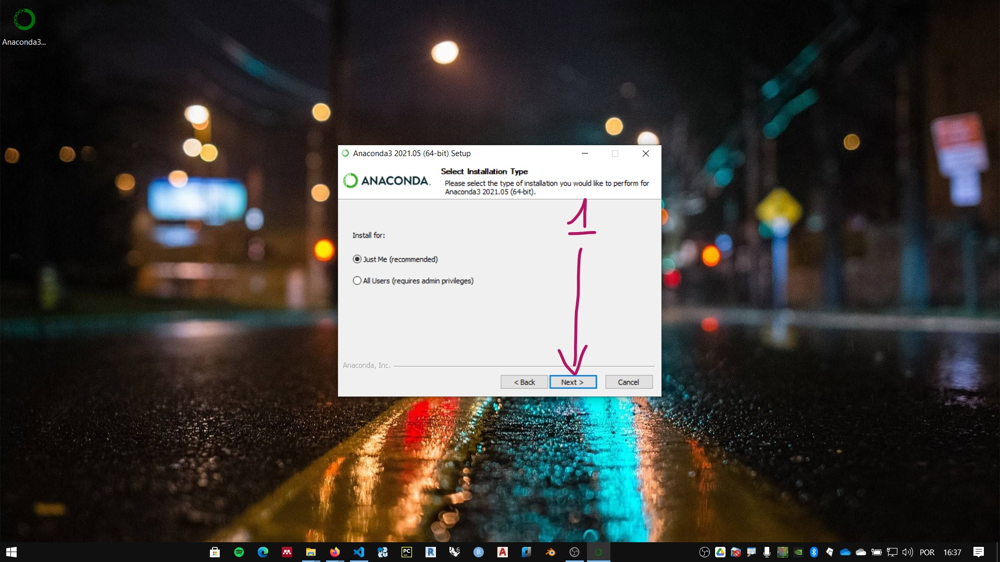

Instalação do Python
A distribuição oficial do CPython pode ser encontrada na página da Python Foundation, Python.org. Embora este seja um material rico sobre a linguagem, neste curso vamos utilizar a distribuição anaconda. Anaconda é uma distribuição do Python orientada para programação científica e análise de dados. A página oficial da distribuição é anaconda.com

O instalador da versão individual (gratuita) pode ser baixada no link: https://www.anaconda.com/products/individual. Ou pelo menu Products, opção Individual Edition.

Clique no link de download para baixar o instalador. Certifique-se de baixar o executável compatível com seu sistema operacional.

Instalação no Windows
Siga as instruções:
- Execute o instalador
- Concorde com os termos do serviço. clique em I Agree.

- Instalar para o usuário atual do computador ou para todos os usuários. O padrão é apenas para o usuário atual (just me). Escolha sua opção e clique em Next. 
- Escolha a pasta da instalação e clique em Next.

- Opções de instalação. Não é recomendado marcar a primeira opção.Pode-se marcar a segunda opção. clique em instalar e aguarde o final do processo.

Preparando o ambiente no Windows
Note
As instruções abaixo são baseadas no Windows 10.
IDLE
O IDLE é uma interface básica para programação do CPython. Idle, em inglês significa ocioso. Em computação pode significar que o processador já executou as instruções e aguarda novos comandos. Levando em consideração:
- o senso de humor dos criadores do Python,
- e que o nome da linguagem é uma homenagem ao grupo de humor Monty Python
O nome deste ambiente pode ser uma homenagem a um dos membros do grupo, o ator, músico, escritor e comediante Eric Idle.
A simplicidade da interface IDLE é uma vantagem quando se esta começando a programar pela linguagem Python. Podemos focar na lógica de programação e características da linguagem em uma interface sem muitas distrações ou necessidades de configuração.
Para acessar a interface IDLE da instalação Anaconda no Windows:
Criando um atalho para o IDLE
-
Clique com o botão direito na área de trabalho

-
coloque o caminho do atalho conforme instruções abaixo:

-
Quando a distribuição conda é instalada apenas para o usuário atual (just me) use:
%USERPROFILE%\anaconda3\Scripts\idle.exe
ou
%USERPROFILE%\anaconda3\Lib\idlelib\idle.pyw -
Quando a distribuição conda é instalada para todos os usuários (all users) (conferir caminho) :
%PROGRAMDATA%\anaconda3\Scripts\idle.exe
ou
%PROGRAMDATA%\anaconda3\Lib\idlelib\idle.pywWarning
Caso tenha instalado a distribuição em um outro caminho e não saiba qual veja as instruções no link
-
Copie o caminho para o IDLE e clique em avançar

-
Clique em concluir

-
Execute o atalho e, na tela do IDLE, digite:
print("hello, world")e aperte enter